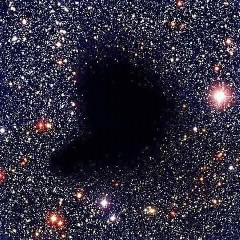
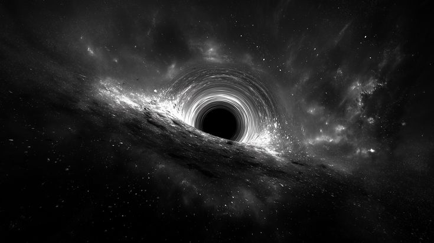

El Universo y sus Secretos
Índice
Hechos sin explicación
El 26 de octubre del 2022 se logró captar una formación singular que formaba un rostro; se detectaba movimiento , ya que se podía medir su singularidad cerca por los planetas de nuestro sistema solar. Sin embargo, la NASA argumentó que solo era una formación de estrellas y basura espacial; lo que generó duda fue que bajaron la foto de la web y no volvieron a comentar el tema.
Curiosidades que Habitan el universo.
Hay una parte del universo a donde se le llama el bote vacío, ya que hay una forma negra oscura donde no se distingue nada de estrellas y simplemente tiene la forma de un bote en total oscuridad, pero este abarca miles de kilómetros.
Los científicos aún no le encuentran explicación.

Exoplanetas
¿Sabías que hay planetas en el espacio a donde sí podemos irnos a vivir? Así es, hay planetas que ya hemos descubierto donde podemos habitar; sin embargo, todos estos planetas están a años luz y es imposible viajar a años luz, al menos por ahora.
Si pudieras darle la vuelta a la Tierra a velocidad luz, podrías darle la vuelta ocho veces en un segundo; entonces imagínate viajar a esa velocidad durante años, parece algo imposible.

¿Te quedaste con ganas de más?
Conoce lo más escalofriante:
